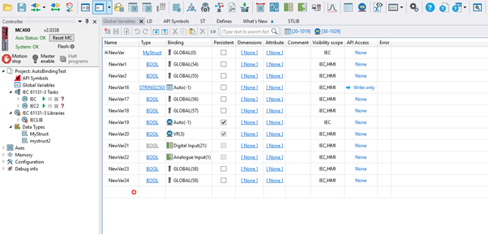
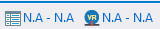
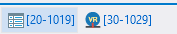
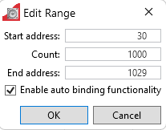

Auto Bindings are not user-defined. By default, Auto Bindings are turned off.
They are used when a user enables the Persistent or API Access options.
There are two types of auto bindings.

Auto bindings option can be accessed from the Global Variables Editor or the IEC variables Editors.
In each editor’s in the toolbar, you will find options to configure auto VRs and auto TABLEs ranges.
 - Auto binding is turned off
 - Auto binding is turned on
Motion Perfect prevents range collisions.
Clicking on the URL opens a dialog where the range can be modified, and auto binding functionality can be enabled or disabled.

Auto bindings indexes are assigned during IEC task compilation.
This option ensures the variable retains its value after a
controller restart.
When enabled, it assigns a VR index from the selected VR range.
Please visit API Symbols help page for more information